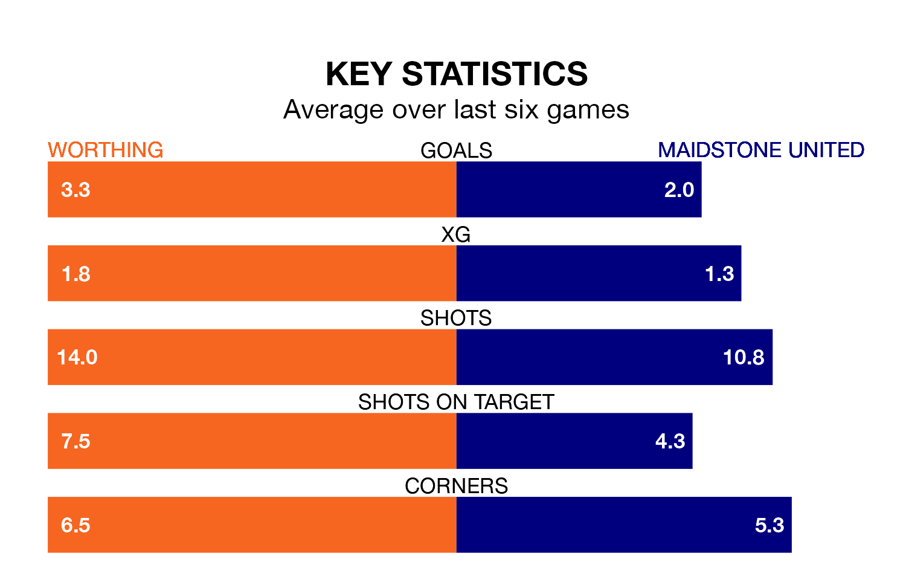

Two of the National League South's top sides face each other at the Sussex Transport Community Stadium in Sunday's kick-off, when third-placed Worthing host fourth-placed Maidstone United.
Worthing have picked up 26 wins and six draws from 46 games so far this season, and sit one point above the visitors going into the 3pm match.
Stones, meanwhile, have won 24 and drawn 11, picking up 83 points.
With 104 goals in 46 games so far this season, Worthing are the league's highest scorers with 2.3 goals per game. But they are conceding more than average too, letting in 72 goals at a rate of 1.6 per game.
Maidstone are also above average scorers, with 1.6 goals per game, compared to a league average of 1.4. They have conceded 1.1 goals per game.
The hosts are in exceptional form in the National League South, with six wins and no losses from their last six games.
With five wins and one loss over that period, United's form is worse – they have taken 15 points from 18, compared to Worthing's 18.
In the last three years, Worthing and Maidstone have played each other on three occasions. Worthing won one of them and Maidstone the other.
Their last meeting was on December 16, when Worthing won 5-1 at home.
Worthing's last match was on April 20, a 4-2 win against Weston-super-Mare.
Maidstone beat Aveley 2-1 last time out, on Wednesday.
Updated: 07:59 (UTC), 26/04/24